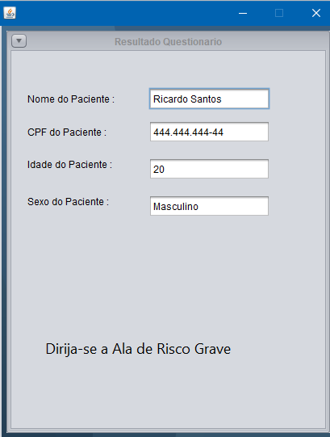
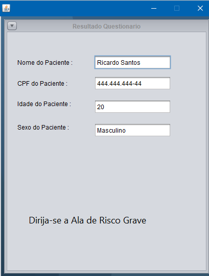

Projeto Feedback
Esse Projeto Feedback foi feito na Linguagem Java
e foi utilizado a interface do JavaSwing, o usuario da
a nota do atendimento de uma classificação de Péssimo
até Excelente, e então é somado a média Atual dos votos
e a quantidade de votos de Péssimo até Excelente .
JAVA
JavaSwing
Verificar Código no Github

 
